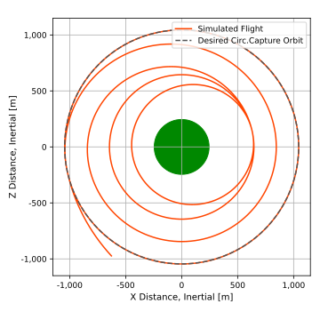

scenarioAsteroidArrival
Overview
This simulation demonstrates how to put a spacecraft in orbit about a custom gravitational body while conducting several attitude changes. Several attitude pointing modes are implemented, along with other visual tools including antenna transmission and thruster visualization.
The spacecraft starts on a elliptical orbit towards the asteroid Bennu. The spacecraft conducts a burn at periapsis of the elliptical orbit, transferring to a circular orbit about Bennu with a radius of 800 meters. The spacecraft then completes a series of Hohmann transfers while also conducting several attitude changes until reaching a final elliptical orbit about the asteroid.
The script is found in the folder basilisk/examples and executed by using:
python3 scenarioAsteroidArrival.py
Attention
To see the asteroid Bennu in Vizard the asteroid asset bundle must be installed. See the Vizard Download web page.
Setting Up The Custom Gravitational Body
Because Spice will not be used to generate the ephemeris information for Bennu, an instance of the module
planetEphemeris is created to generate Bennu’s ephemeris:
gravBodyEphem = planetEphemeris.PlanetEphemeris()
gravBodyEphem.ModelTag = 'planetEphemeris'
scSim.AddModelToTask(simTaskName, gravBodyEphem)
gravBodyEphem.setPlanetNames(planetEphemeris.StringVector(["Bennu"]))
Next, the module is configured by specifying the orbital parameters of Bennu:
timeInitString = "2011 January 1 0:00:00.0"
diam = 2 * 245.03 # m
G = 6.67408 * (10 ** -11) # m^3 / kg*s^2
massBennu = 7.329 * (10 ** 10) # kg
mu = G * massBennu # Bennu grav. parameter, m^3/s^2
oeAsteroid = planetEphemeris.ClassicElements()
oeAsteroid.a = 1.1264 * astroConstants.AU * 1000 # m
oeAsteroid.e = 0.20375
oeAsteroid.i = 6.0349 * macros.D2R
oeAsteroid.Omega = 2.0609 * macros.D2R
oeAsteroid.omega = 66.2231 * macros.D2R
oeAsteroid.f = 0.0 * macros.D2R
gravBodyEphem.planetElements = planetEphemeris.classicElementVector([oeAsteroid])
gravBodyEphem.rightAscension = planetEphemeris.DoubleVector([85.65 * macros.D2R])
gravBodyEphem.declination = planetEphemeris.DoubleVector([-60.17 * macros.D2R])
gravBodyEphem.lst0 = planetEphemeris.DoubleVector([0.0 * macros.D2R])
gravBodyEphem.rotRate = planetEphemeris.DoubleVector([360 * macros.D2R / (4.296057 * 3600.)]) # rad/sec
Next, Bennu can be created as a gravitational body using the createCustomGravObject() method:
asteroid = gravFactory.createCustomGravObject("Bennu", mu)
asteroid.isCentralBody = True # ensure this is the central gravitational body
Finally, subscribe the custom gravitational body planetBodyInMsg to the planetEphemeris output message
planetOutMsgs:
asteroid.planetBodyInMsg.subscribeTo(gravBodyEphem.planetOutMsgs[0])
The spacecraft object is then created and all gravitational bodies are connected to the spacecraft.
Recall that when configuring the ephemeris converter module, Bennu was not created with Spice. Therefore its input
message is of type planetEphemeris:
ephemObject.addSpiceInputMsg(gravBodyEphem.planetOutMsgs[0])
Implementing Attitude Pointing Modes
After the spacecraft’s initial orbital elements about Bennu are set using the orbitalMotion module, the attitude
modules and modes are created and configured. The four attitude pointing modes incorporated into this script include
Earth-pointing using the spacecraft’s antenna with transmission visualization, Sun-pointing with the spacecraft’s
solar panel normal axis, orbital velocity pointing while conducting thruster burn visualizations, and science-pointing
towards the asteroid using a sensor created on the spacecraft.
Important
Refer to the integrated example script scenarioFlybySpice for a more detailed discussion on configuring attitude modules and modes for a mission scenario.
To execute the desired attitude-pointing mode, the run flight mode function must be called with the desired simulation time:
runAntennaEarthPointing(desiredSimTimeSec)
Additional Visualization Features
To add a visualization of antenna transmission back to Earth during the Earth-pointing mode we
can’t use the typical way of adding these generic sensors, thrusters, etc. The reason is that we want to illustrate a
thruster, but we are not using a thruster effector. Thus, to add a thruster to the Vizard binary
we need to manually add these to the vizInterface spacecraft data structure.
First, as is typical, a transceiver is created through the vizInterface:
transceiverHUD = vizInterface.Transceiver()
transceiverHUD.r_SB_B = [0., 0., 1.38]
transceiverHUD.fieldOfView = 40.0 * macros.D2R
transceiverHUD.normalVector = [0., 0., 1.]
transceiverHUD.color = vizInterface.IntVector(vizSupport.toRGBA255("cyan"))
transceiverHUD.label = "antenna"
transceiverHUD.animationSpeed = 1
To add a sensor visualization for the science-pointing mode, a sensor is created using the vizInterface:
genericSensor = vizInterface.GenericSensor()
genericSensor.r_SB_B = cameraLocation
genericSensor.fieldOfView.push_back(10.0 * macros.D2R)
genericSensor.fieldOfView.push_back(10.0 * macros.D2R)
genericSensor.normalVector = cameraLocation
genericSensor.size = 10
genericSensor.color = vizInterface.IntVector(vizSupport.toRGBA255("white", alpha=0.1))
genericSensor.label = "scienceCamera"
genericSensor.genericSensorCmd = 1
To add a camera to the science-pointing mode, the createStandardCamera method is used:
vizSupport.createStandardCamera(viz, setMode=1, spacecraftName=scObject.ModelTag,
fieldOfView=10 * macros.D2R,
pointingVector_B=[0,1,0], position_B=cameraLocation)
Finally, to add a thruster visualization for the thruster burn mode, the vizInterface is again invoked.
Here we manually add the Vizard interface elements back in to redo what the enableUnityVisualization()
normally does for us. The main difference is that we are manually setting the thruster information as
the spacecraft dynamics does not contain a thruster effector:
scData = vizInterface.VizSpacecraftData()
scData.spacecraftName = scObject.ModelTag
scData.scStateInMsg.subscribeTo(scObject.scStateOutMsg)
scData.transceiverList = vizInterface.TransceiverVector([transceiverHUD])
scData.genericSensorList = vizInterface.GenericSensorVector([genericSensor])
thrusterMsgInfo = messaging.THROutputMsgPayload()
thrusterMsgInfo.maxThrust = 1 # Newtons
thrusterMsgInfo.thrustForce = 0 # Newtons
thrusterMsgInfo.thrusterLocation = [0, 0, -1.5]
thrusterMsgInfo.thrusterDirection = [0, 0, 1]
thrMsg = messaging.THROutputMsg().write(thrusterMsgInfo)
scData.thrInMsgs = messaging.THROutputInMsgsVector([thrMsg.addSubscriber()])
After running the enableUnityVisualization() method, we need to clear the vizInterface spacecraft
data container scData and push our custom copy to it:
viz.scData.clear()
viz.scData.push_back(scData)
Illustration of Simulation Results
The following image illustrates the expected simulation run return for the case when plots are requested.
Visualization In Vizard
The following image illustrates the expected visualization of this simulation script.